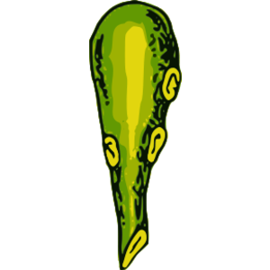
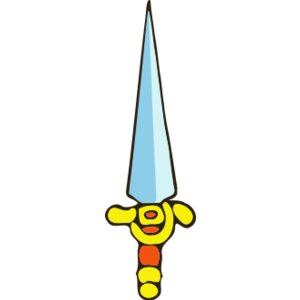
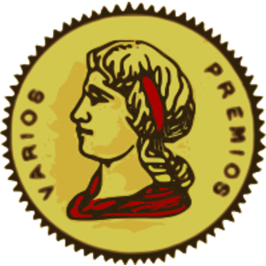
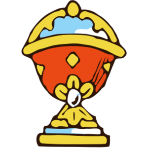

Una pieza musical estocástica para jugar en la que un crupier guía a un grupo personas que cantan hasta que se les acaba el aire. La pieza tiene 3 movimientos: truco, julepe y escoba.
Para jugar Mezcla coral hacen falta al menos 21 intérpretes (mejor si son más). Alguien deberá asumir la dirección de la obra (el crupier). Se necesita una cantidad de barajas españolas suficiente para que el crupier tenga una baraja completa y los demás (los coreutas) tengan una única carta.
El crupier deberá ubicarse de manera de poder ser visto por todos los coreutas. Sus funciones serán:
silencio()
repetir(3):
crupier.mezclar()
repetir(n)
crupier.dar()
coreuta.evaluar(carta crupier)
si (coincidencia exacta):
coreuta.gritar("Vamos todavía")
o si (coincidencia):
coreuta.cantar(palabra roja, fuerte)
si no:
coreuta.cantar(palabra azul, suave)
crupier.guardarbaraja(bolsillo)
aplausos()
|  |  |  |  |
| truco buenas |
cuatro malas |
...vido falta |
ancho canté |
| ...lepe ...bliga |
pozo puesta |
triunfo caer |
mano ciega |
| seten... punto |
quince ...tenta |
siete oro |
cartas mesa |
Sólo estrenamos Julepe, el segundo movimiento de Mezcla coral. El estreno estuvo a cargo del auditorio del 9º Festival del Ingenio, el cual tuvo lugar en el Colegio Nacional Buenos Aires en octubre de 2018.